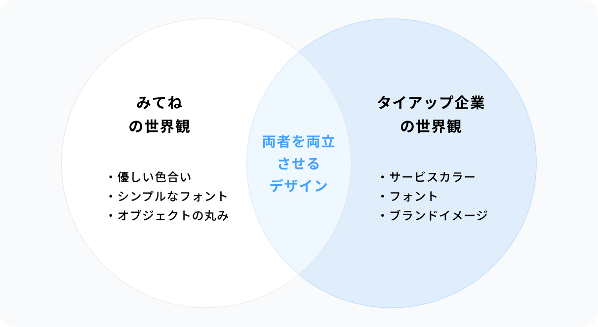

子どもの成長をいつでもどこでも、いつまでも。
家族で写真・動画を共有し、
成長を見守る家族アルバムアプリ。
Overview概要
株式会社MIXIにて、Webデザイナー兼コーダーとして、家族アルバムアプリ「みてね」の広告事業に参画。クライアント企業とのタイアップ企画を中心に、デザイン制作から実装・運用までを担当しました。
● このサービスを一言で表すと
子供の写真や動画を、両親、祖父母などの家族限定で
簡単に共有・整理できる無料アプリです。
● 主なユーザー
子育て中のママ・パパ、そして祖父母を含む家族全体。
特に0〜6歳の子どもを持つ家族が中心ユーザー層です。
-
●︎︎ 業界：ファミリーテック / 写真共有サービス
● ボリューム：約100画面
● ツール：Figma / Ruby on Rails / Github / Notion
● 担当業務：Webデザイン、コーディング、テンプレメンテナンス
● サービス形態：iOS/Androidアプリ -
●体制：
デザイナー 4名
Webデザイナー 4名
編集 1名
PdM 1名
開発 5名程度
どんなアプリ？
「みてね」は、子どもの写真や動画を家族で共有できる家族アルバムアプリです。
無料・無制限で写真や動画をアップロードでき、離れて暮らす祖父母とも子どもの成長をリアルタイムに共有できます。月ごとに自動整理されたアルバムや、写真から自動生成される1秒動画など、家族で成長を振り返る体験が特徴です。
ママやパパの半数が使うNo.1家族アルバムアプリとして、多くの家族に愛用されています。
Works業務内容など
主な担当業務
タイアップ企画におけるデザイン制作を中心に、LP / バナー / モーダルの制作から実装まで担当しました。
- タイアップLP / バナー / モーダルのデザイン制作
- LPのコーディング（Rails、Wraptas + Notion）
- アプリ内特集ページの実装・運用
- コーディングレビュー・品質管理
- AIツールを活用した効率化（工数削減）
- 運用を見据えた実装設計
タイアップ企画とは？
「みてね」のタイアップ企画は、クライアント企業とのコラボレーションによる広告施策です。
アプリ内に導線バナーやモーダル（ポップアップ）を配置し、クライアント企業の商品・サービスを紹介する専用LPへユーザーを誘導します。不動産、スポーツ、通信、エンタメなど、多様な業種の企業と協業し、「みてね」ユーザーである子育て世代に向けた情報を届けています。
タイアップ企画は、規模や内容に応じて2つの実装手法を使い分けていました。
-
ライトタイアップ
Wraptas+Notionでテンプレート化されたLP。編集者がNotionにコンテンツを入力するだけで、LPが自動生成される仕組み。短期間・低コストで展開できる施策に適しています。
-
みてねコラボ
Railsで自由にコーディングする、フルカスタマイズ型のLP。高いデザイン自由度が求められる大型タイアップに対応。「みてね」の世界観を保ちながら、クライアント企業のブランドを深く表現できます。
不動産情報サービス、プロスポーツチーム、通信サービス、エンタメ企業など、多様な業種のクライアント企業とのタイアップを担当しました。
世界観とブランドの両立
背景
クライアント企業とのタイアップ企画では、広告としての訴求力を持たせつつ、「みてね」の世界観を崩さないデザインが求められました。「みてね」は家族の温かさや子どもの成長を見守る優しいトーンが特徴のサービスです。一方で、クライアント企業にはそれぞれ固有のブランドイメージやトーンがあり、両者を自然に融合させることが重要でした。
制作プロセス
営業から降りてくるヒアリングシートをもとに、デザイナー・Webデザイナー・編集・営業・リードデザイナーでMTGを実施。クライアントの要望や訴求内容を共有し、「みてね」の世界観を守りながらどう表現するかをチーム全体で検討しました。
例えば、色に関しては基本「みてね」のデザインシステムに定義されたカラーパレットを使用し、統一感を保ちました。クライアントのサービスカラーや配色は、使用する色の参考にしたり、みてねのトーンに調節して取り入れるなどしていました。
また、クライアント企業の指定フォントがある場合は可能な限り使用しましたが、「みてね」のイメージから大きく外れる場合は、癖のないRyo
Gothicなど、「みてね」で一般的に使用されているフォントを採用。ブランドを尊重しつつ、サービスの世界観を損なわない判断を心がけました。

{kind=link}
特に難しかったタイアップ事例
プロスポーツチームとのタイアップでは、「みてね」と対照的なイメージが強く、デザインに落とし込むのが特に難しかったです。チームカラーである赤と青が強く、クライアント側の要望も「みてね」のトンマナと乖離がありました。
この案件では、クライアントが提案した構成は参考にしつつ、以下のような工夫で対応しました。
- 色の調整：原色の赤・青ではなく、薄めのトーンに調整し、柔らかい印象に
- 装飾の変更：構成はそのまま、スポーティで力強い装飾や加工を、「みてね」らしい丸みのある優しい装飾や加工に差し替え
- レイアウトのバランス：構成はそのまま、ダイナミックな写真の配置などを調節し、落ち着きのある「みてね」らしいイメージに
運用を見据えた実装と効率化
テンプレートのメンテナンス
Wraptas+Notionで構築されたライトタイアップ用テンプレートのメンテナンスを担当しました。編集者がNotionにコンテンツを入力するだけで、LPが自動生成される仕組みとなっており、テンプレート自体は他のメンバーが設計したものでしたが、運用を通じて以下のような改善を実施しました。
- 運用ミスを防ぐ設計：Notion側でミス操作が起きないよう、可変部分を最小限に設定
- 機能拡張：Googleアンケートを実装し、Notion側のブロック削除するだけでアンケートを削除できる仕様
- 継続的なメンテナンス：バグ修正、新機能追加、デザイン更新など、運用を通じて発生する様々な要望に対応
アプリ内特集ページの自動化設計
アプリ内特集ページのページ構造設計およびコーディングを担当しました。運用フェーズでは特集内容に応じたコンテンツのコーディングや差し替え対応も行いました。
運用を見据え、様々なパターンで作成できることを考慮しつつ、最も運用コストが少ない構成を目指して以下のような仕組みを実装しました。
- カード表示と、新着バッジの自動制御
特集ページにおいて、JavaScriptで制御する仕組みを構築。コーディング時に掲載開始日と終了日を設定するだけで、自動的に掲載開始と掲載終了する仕組みにしています。また、掲載日+7日後に自動的にクラスが外れ、新着バッジが非表示になるよう実装しました。運用担当者が手動で更新する必要がなく、継続的な運用がしやすい構成を実現しました。
- 空状態の表示制御
Railsでcard_hasのようなクラスを設定し、カード要素を管理。特集ページ内のカードが全て非表示になった際には、自動的に空状態（empty）の画像を表示する仕組みを実装しました。これにより、コンテンツが終了した後も、ユーザーに適切なフィードバックを提供できるよう配慮しました。

効率化と品質管理
コーディングレビューと品質管理
他のメンバーが担当したLPのコーディング内容をレビューし、品質を担保しました。特に、
クラス設計やHTML構造が整理されているかなど「コードの可読性」と、
Figmaのデザイン意図が、レスポンシブ時にも正確に再現されているかなど「デザイン再現度」
を重視してレビューを実施しました。
レビューを通じて、着手順や対応タイミングの調整、デザイン変更点の反映指示を行い、チーム全体の制作品質を保ちながらプロジェクトが進むようサポートしました。
AIツールによる効率化検証
LPコーディングにおいて、AIを活用した効率化に取り組みました。
Figma
Make、Cursor、ChatGPTなどのツールを使用し、より綺麗に・効率良くコーディングするための方法を調査・検証しました。
Figmaデザインをツールに入力し、生成されたコードを確認・修正するという流れで検証を進め、各ツールの特性を比較しながら、どのツールがどの工程に適しているかを見極めました。
手動で行っていたHTML構造の作成、CSSスタイリング、レスポンシブ対応といった作業において、AIツールによってベースコードを素早く生成できるようになりました。細かい調整は手動で行う必要がありましたが、初期段階の工数を大幅に削減することに成功し、全体として開発工数の大幅な削減を実現しました。